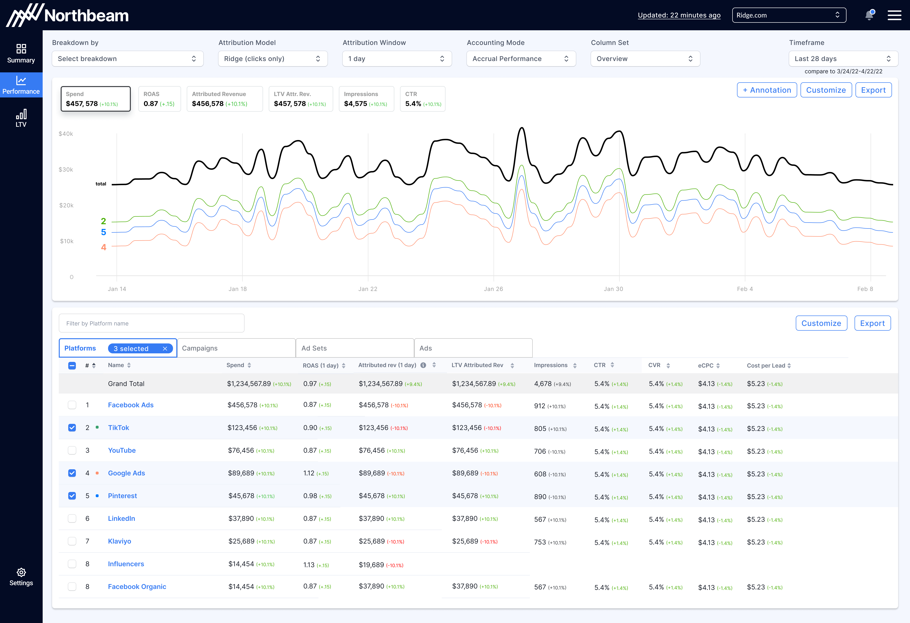
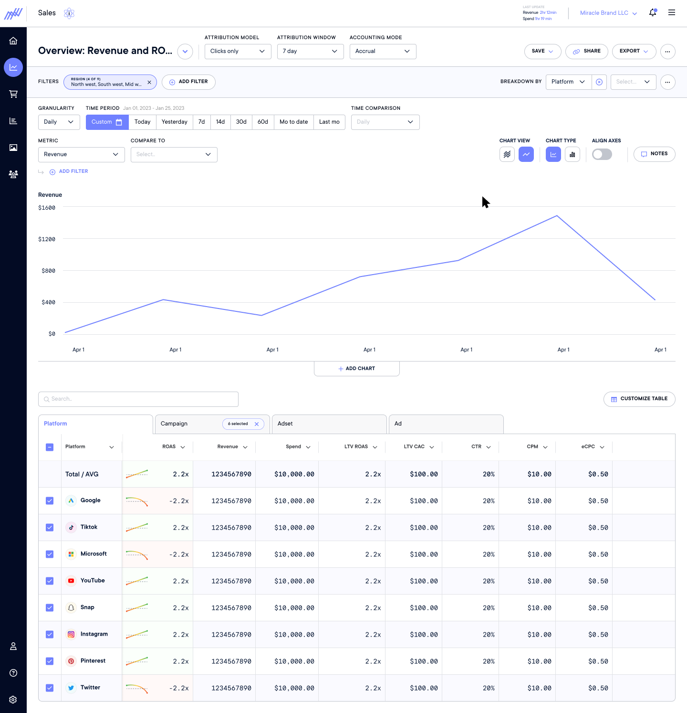
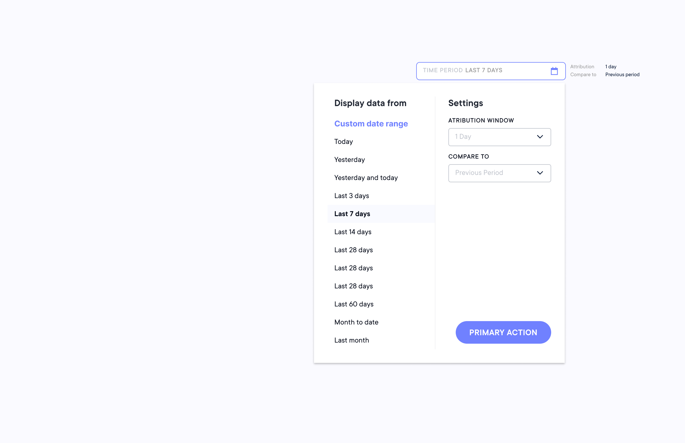
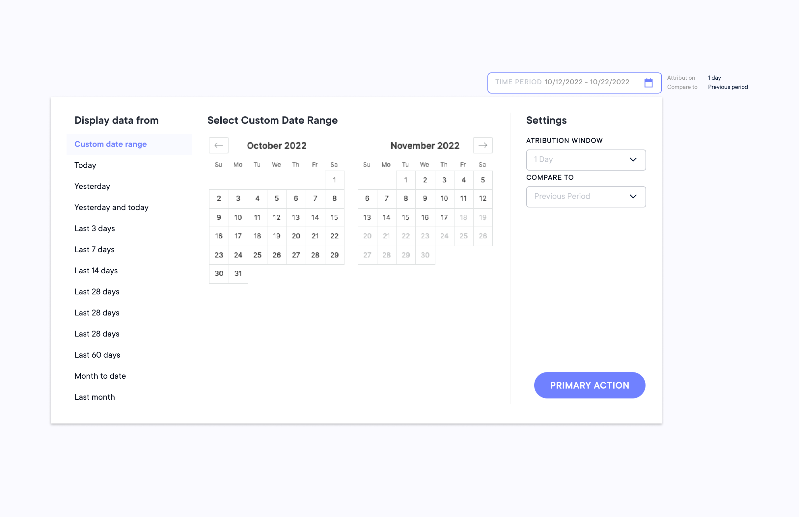

Northbeam was losing deals to Triple Whale — a competitor with a cleaner, more intuitive interface. Despite Northbeam's stronger underlying data, "poor design" was frequently cited as a reason for lost sales. The goal was to close that gap with a full interface revamp, and to establish a design system that would give the product team a scalable foundation to accelerate future development.
I joined Northbeam as an outside consultant brought in specifically to lead the interface revamp. Three months in, the engagement converted to a full-time role — a reflection of the momentum the project had built. Over time I transitioned into a leadership position, managing a team of vendors and contractors to execute the redesign across every page of the platform.
Much of the interaction design drew from Meta's Ads Manager — intentionally. Our primary persona, the veteran ad buyer, lived in Meta's tooling daily and found those patterns immediately intuitive. The problem was that other personas — CMOs, brand owners, newer ad buyers — had no such familiarity, and what felt native to one group felt complicated to another. In an ideal world I would have loved to explore a dual-mode approach: a power user mode built around Meta's patterns for experienced buyers, and a simpler, more guided mode for less technical users. That kind of adaptive interface would have served the full breadth of our user base without compromising depth for either.


The date range, comparison date range, and attribution window were all separate selection actions related to time. This exploration combined all time-based actions into a single grouped interaction — reducing cognitive load and streamlining one of the most frequently used controls in the platform.

